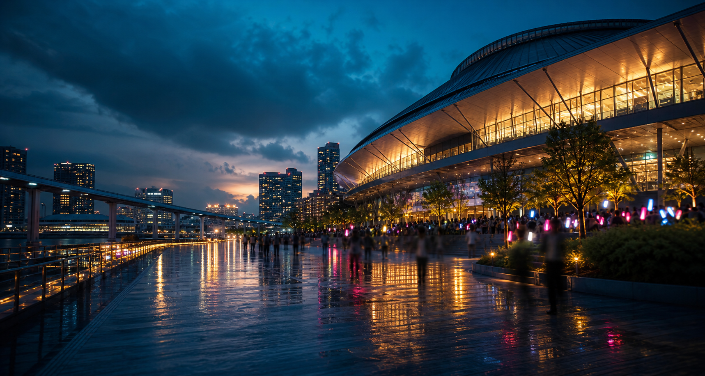
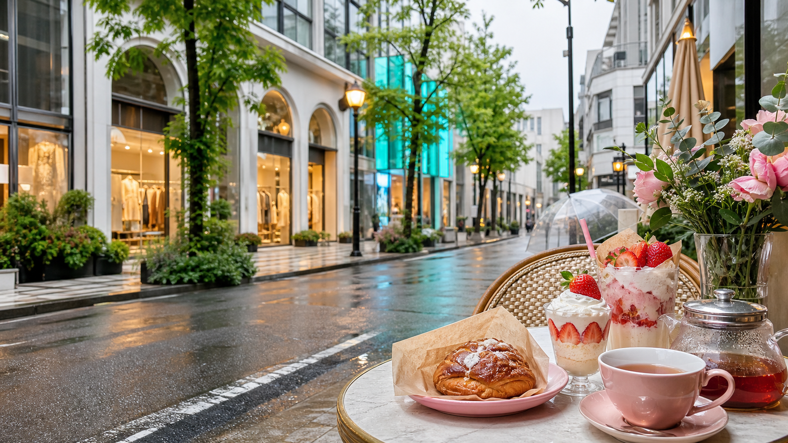
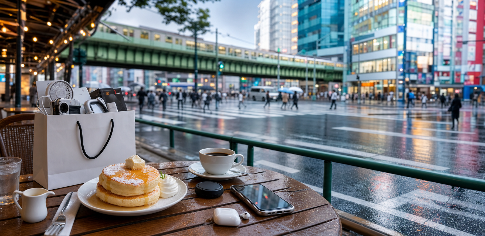
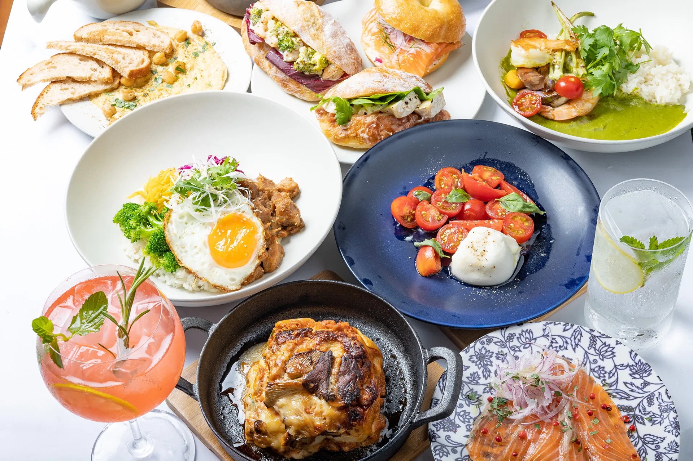
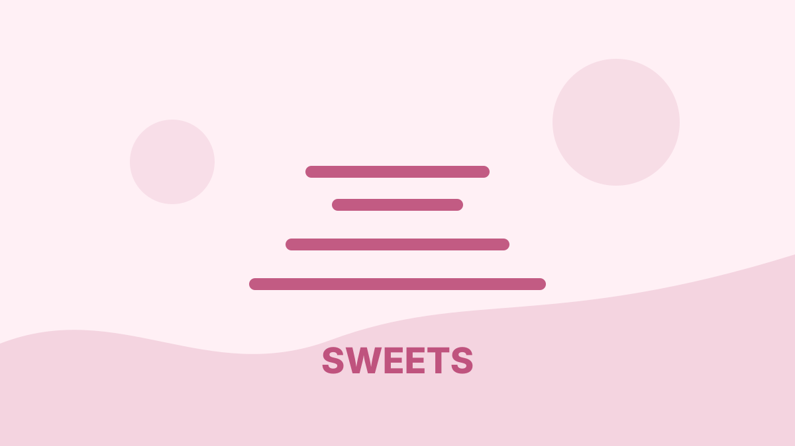
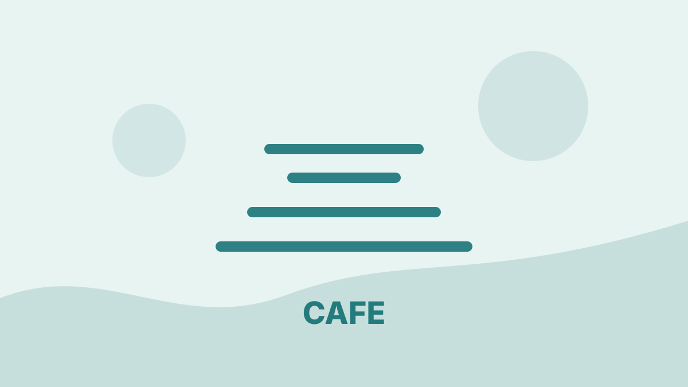
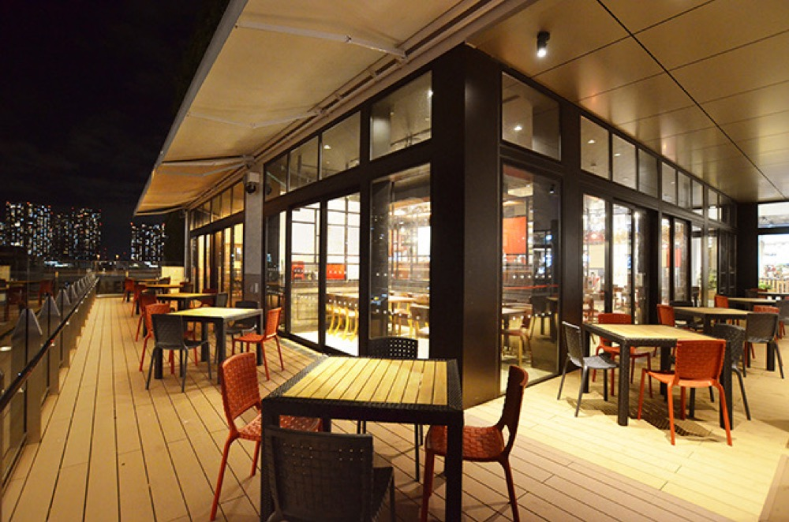
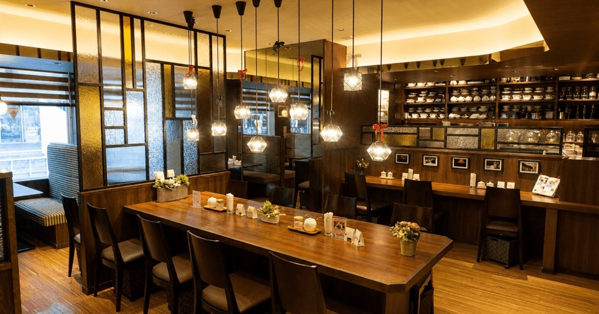

読み込み中
JST --:--
遠征準備モード
日程データを読み込んでいます。
TOKYO EXPEDITION / 2026.06.16 - 06.18
羽田着から丸の内ランチ、みそきん池袋、原宿/表参道、ヨドバシAkibaまで。ライブに遅れない動線で、保存グルメもちゃんと楽しむ2泊3日のスマホ用しおりです。
旅行前、当日、移動中のどこで開いても「次に何をするか」が分かる場所です。
詰め込みすぎず、ライブ到着余裕と保存グルメの満足度を両立する組み方です。
ライブ、原宿、秋葉原の流れを画像でも分かるようにしました。

LIVE
この旅の中心。Day1は16:30着、Day2は14:45に有明/豊洲エリア着が目安。

HARAJUKU
みそきん後の短時間散策。Age.3×Q、CHAVATY、KAWAII LAB.文脈を拾う。

AKIBA
最終日は家電とカフェ。12:10で買い物を切り上げ、羽田に余裕を残す。
スマホでは今日のタブだけ見れば動けます。旅行期間中は日付に合わせて初期表示します。
押した予約枠に合わせて、Day2の原宿/表参道をどこまで回るか決めます。選択はブラウザに保存されます。
BEST
AF GALLERY周辺、Age.3×Q、CHAVATYまで狙える一番きれいな枠。
GOOD
原宿は短め。AF GALLERY周辺とAge.3×Q中心、CHAVATYは時間次第。
TIGHT
原宿は1スポット。迷ったらAge.3×Q HARAJUKUに絞る。
BACKUP
池袋を短縮。yellow 表参道、CHAVATY表参道、クレープとエスプレッソとへ。
保存リストとSNS映え傾向から、今回の動線に合う店を優先採用。
TOKYO FOOD
東京駅、池袋、原宿、有明、秋葉原に寄せて、ライブに遅れない範囲で楽しむ構成です。





Bowls#、cafe486、MACAPRESSO、She Wolf Diner、Atamiなどは別ページにまとめ済み。次回東京でも使えます。
Googleマップの4リストから重複をまとめた62店舗。店名検索、目的別フィルター、地図/公式リンクを付けています。
画像は公式サイト、商業施設公式ページ、公式SNSを優先。公式系画像が確認できない店はジャンル別の代替ビジュアルにしています。
6月の東京は天気と交通で崩れやすいので、削る順番を先に決めておきます。
東京駅の京葉線長距離乗換を避けられる場面は避けて、体力を温存。
目安50-60分。到着日はこのルートが楽。
目安30-40分。ライブ日は混雑分として+15分。
目安45-55分。みそきん池袋店と相性が良い。
Day2は寄り道しすぎない。14:15出発がリミット。
13:30荷物回収、15:20-15:40羽田着が目安。
規制退場と駅混雑を見て、急ぎすぎない。
チェック状態はこのブラウザに保存されます。前日と当日に同じページで確認できます。
0 / 0 完了
電子チケット、本人確認、みそきん予約、天気、羽田便をここで潰す。
スマホ充電、Suica、モバイルバッテリー、雨具、ライブグッズを出発前に確認。
2026年5月26日時点の整理。営業時間、予約、ライブ運営情報は直前に再確認。